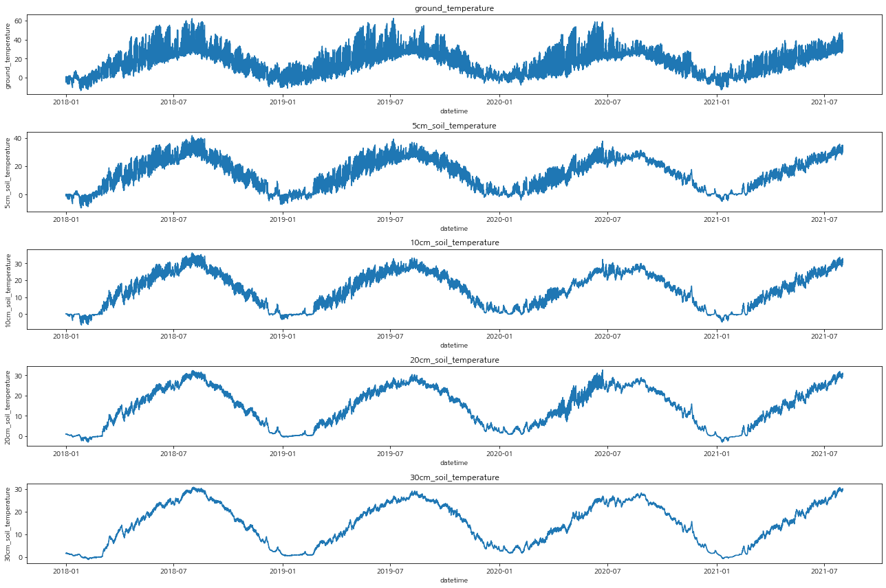

Exploratory Data Analysis
Contents
Exploratory Data Analysis¶
import sqlite3
import numpy as np
import pandas as pd
from pathlib import Path
from tqdm.notebook import tqdm
from typing import Union, List
from collections import defaultdict
import matplotlib.pyplot as plt
import seaborn as sns
from IPython.display import display
import ipywidgets as widgets
proj_path = Path().absolute().parent
data_path = proj_path / 'data'
# set font family
plt.rcParams["font.family"] = 'NanumGothic'
SQLite3 Database¶
airmeasure
-------------------------------------
sid INTEGER PRIMARY KEY
measure_code INTEGER NOT NULL UNIQUE
district TEXT
measure_name TEXT
address TEXT
measure_point TEXT
airquality
-------------------------------------
airid INTEGER PRIMARY KEY
measure_code INTEGER
datetime TEXT
SO2 REAL
CO REAL
O3 REAL
NO2 REAL
PM10 REAL
PM25 REAL
holiday
-------------------------------------
hid INTEGER PRIMARY KEY
date TEXT
day TEXT
name TEXT
type TEXT
weather
-------------------------------------
wid INTEGER PRIMARY KEY
measure_code INTEGER
measure_name TEXT
datetime TEXT
temperature REAL
temperature_flag REAL
precipitation REAL
precipitation_flag REAL
wind_speed REAL
wind_speed_flag REAL
wind_direction REAL
wind_direction_flag REAL
humidity REAL
humidity_flag REAL
vapor_pressure REAL
dew_point_temperature REAL
local_pressure REAL
local_pressure_flag REAL
sea_level_pressure REAL
sea_level_pressure_flag REAL
sunshine REAL
sunshine_flag REAL
solar_radiation REAL
solar_radiation_flag REAL
snow REAL
snow_3hour REAL
cloud REAL
mid_level_cloud REAL
cloud_type TEXT
lowest_cloud REAL
visibility INTEGER
ground_status_code REAL
weather_status_code REAL
ground_temperature REAL
ground_temperature_flag REAL
5cm_soil_temperature REAL
10cm_soil_temperature REAL
20cm_soil_temperature REAL
30cm_soil_temperature REAL
class DBEngine:
"""SQLite3 DB Engine Wrapper"""
def __init__(self, db_path: Union[str, Path]):
self.conn = sqlite3.connect(db_path)
def query(self, sql_statement: str):
cur = self.conn.cursor()
res = cur.execute(sql_statement)
res = res.fetchall()
cur.close()
return res
def quit(self):
self.conn.close()
def _sql(self, query:str):
# no auto commit
cur = self.conn.cursor()
cur.execute(query)
self.conn.commit()
cur.close()
def insert(self, query:str):
return self._sql(query)
def update(self, query:str):
return self._sql(query)
db = DBEngine(db_path=data_path / "airpollution.db")
EDA¶
Airquality¶
airmeasure
-------------------------------------
sid INTEGER PRIMARY KEY
measure_code INTEGER NOT NULL UNIQUE
district TEXT
measure_name TEXT
address TEXT
measure_point TEXT
airquality
-------------------------------------
airid INTEGER PRIMARY KEY
measure_code INTEGER
datetime TEXT
SO2 REAL
CO REAL
O3 REAL
NO2 REAL
PM10 REAL
PM25 REAL
# What is the date range?
sql = """
SELECT MIN(datetime), MAX(datetime)
FROM airquality
"""
res = db.query(sql)
pd.DataFrame(res).rename(columns=dict(enumerate(['min', 'max'])))
| min | max | |
|---|---|---|
| 0 | 2018-01-01 00:00:00 | 2021-07-31 23:00:00 |
# What is the number of unique data districts?
sql = """
SELECT COUNT(DISTINCT measure_code)
FROM airmeasure
"""
res = db.query(sql)
res[0][0]
40
# How is each data in the air for each district?
sql = """
SELECT am.district, aq.datetime, aq.SO2, aq.CO, aq.O3, aq.NO2, aq.PM10, aq.PM25
FROM airquality AS aq
JOIN airmeasure AS am
ON aq.measure_code = am.measure_code
GROUP BY am.district, aq.datetime
ORDER BY am.district, aq.datetime
"""
res = db.query(sql)
columns = ['SO2', 'CO', 'O3', 'NO2', 'PM10', 'PM25']
df = pd.DataFrame(res).rename(columns=dict(enumerate(['district', 'datetime'] + columns)))
df['datetime'] = pd.to_datetime(df['datetime'])
# Data Statics on airquality values for each district? (null values)
# How to fill these null values?
# We can fill with data in previous day, assume the data will not change dramatically.
# Or resample the value by other time stamp
df.groupby(['district'])[columns].apply(lambda x: len(x) - x.count())
| SO2 | CO | O3 | NO2 | PM10 | PM25 | |
|---|---|---|---|---|---|---|
| district | ||||||
| 서울 강남구 | 1061 | 842 | 904 | 840 | 683 | 613 |
| 서울 강동구 | 880 | 277 | 402 | 471 | 931 | 653 |
| 서울 강북구 | 318 | 339 | 287 | 340 | 415 | 308 |
| 서울 강서구 | 702 | 284 | 254 | 1237 | 510 | 307 |
| 서울 관악구 | 1060 | 1164 | 1600 | 1206 | 1845 | 1847 |
| 서울 광진구 | 1872 | 1448 | 922 | 602 | 1196 | 956 |
| 서울 구로구 | 764 | 466 | 519 | 1061 | 1885 | 1327 |
| 서울 금천구 | 334 | 399 | 389 | 513 | 609 | 554 |
| 서울 노원구 | 283 | 295 | 268 | 657 | 450 | 439 |
| 서울 도봉구 | 755 | 1495 | 760 | 816 | 878 | 679 |
| 서울 동대문구 | 1212 | 1444 | 1136 | 1231 | 1249 | 1161 |
| 서울 동작구 | 425 | 1142 | 380 | 353 | 591 | 508 |
| 서울 마포구 | 1321 | 1387 | 1514 | 1454 | 1782 | 1512 |
| 서울 서대문구 | 1172 | 1256 | 1118 | 1173 | 2043 | 1377 |
| 서울 서초구 | 475 | 446 | 537 | 669 | 1456 | 902 |
| 서울 성동구 | 295 | 553 | 414 | 435 | 762 | 562 |
| 서울 성북구 | 346 | 2427 | 347 | 321 | 1331 | 863 |
| 서울 송파구 | 770 | 817 | 626 | 650 | 1150 | 788 |
| 서울 양천구 | 348 | 317 | 255 | 329 | 516 | 299 |
| 서울 영등포구 | 265 | 493 | 684 | 294 | 734 | 907 |
| 서울 용산구 | 323 | 500 | 337 | 406 | 626 | 2628 |
| 서울 은평구 | 586 | 987 | 630 | 696 | 969 | 850 |
| 서울 종로구 | 495 | 365 | 275 | 252 | 499 | 396 |
| 서울 중구 | 450 | 1686 | 449 | 379 | 454 | 319 |
| 서울 중랑구 | 1375 | 1629 | 1570 | 1376 | 1330 | 1248 |
# see if the missing values are more than 1day
df_group = df.groupby([df.index.get_level_values(0)] + [pd.Grouper(freq='1D', level=-1)]).apply(lambda x: x.isnull().sum() == 24)
# example
df.loc[(df.index.get_level_values(0) == 111121) &
(df.index.get_level_values(1) <='2020-05-24 23:00:00') &
(df.index.get_level_values(1) > '2020-05-22 23:00:00') ]
---------------------------------------------------------------------------
ValueError Traceback (most recent call last)
Input In [7], in <cell line: 2>()
1 # see if the missing values are more than 1day
----> 2 df_group = df.groupby([df.index.get_level_values(0)] + [pd.Grouper(freq='1D', level=-1)]).apply(lambda x: x.isnull().sum() == 24)
3 # example
4 df.loc[(df.index.get_level_values(0) == 111121) &
5 (df.index.get_level_values(1) <='2020-05-24 23:00:00') &
6 (df.index.get_level_values(1) > '2020-05-22 23:00:00') ]
File ~/miniconda3/lib/python3.8/site-packages/pandas/core/frame.py:7706, in DataFrame.groupby(self, by, axis, level, as_index, sort, group_keys, squeeze, observed, dropna)
7701 axis = self._get_axis_number(axis)
7703 # https://github.com/python/mypy/issues/7642
7704 # error: Argument "squeeze" to "DataFrameGroupBy" has incompatible type
7705 # "Union[bool, NoDefault]"; expected "bool"
-> 7706 return DataFrameGroupBy(
7707 obj=self,
7708 keys=by,
7709 axis=axis,
7710 level=level,
7711 as_index=as_index,
7712 sort=sort,
7713 group_keys=group_keys,
7714 squeeze=squeeze, # type: ignore[arg-type]
7715 observed=observed,
7716 dropna=dropna,
7717 )
File ~/miniconda3/lib/python3.8/site-packages/pandas/core/groupby/groupby.py:882, in GroupBy.__init__(self, obj, keys, axis, level, grouper, exclusions, selection, as_index, sort, group_keys, squeeze, observed, mutated, dropna)
879 if grouper is None:
880 from pandas.core.groupby.grouper import get_grouper
--> 882 grouper, exclusions, obj = get_grouper(
883 obj,
884 keys,
885 axis=axis,
886 level=level,
887 sort=sort,
888 observed=observed,
889 mutated=self.mutated,
890 dropna=self.dropna,
891 )
893 self.obj = obj
894 self.axis = obj._get_axis_number(axis)
File ~/miniconda3/lib/python3.8/site-packages/pandas/core/groupby/grouper.py:893, in get_grouper(obj, key, axis, level, sort, observed, mutated, validate, dropna)
888 in_axis = False
890 # create the Grouping
891 # allow us to passing the actual Grouping as the gpr
892 ping = (
--> 893 Grouping(
894 group_axis,
895 gpr,
896 obj=obj,
897 level=level,
898 sort=sort,
899 observed=observed,
900 in_axis=in_axis,
901 dropna=dropna,
902 )
903 if not isinstance(gpr, Grouping)
904 else gpr
905 )
907 groupings.append(ping)
909 if len(groupings) == 0 and len(obj):
File ~/miniconda3/lib/python3.8/site-packages/pandas/core/groupby/grouper.py:515, in Grouping.__init__(self, index, grouper, obj, level, sort, observed, in_axis, dropna)
509 elif isinstance(self.grouping_vector, Grouper):
510 # get the new grouper; we already have disambiguated
511 # what key/level refer to exactly, don't need to
512 # check again as we have by this point converted these
513 # to an actual value (rather than a pd.Grouper)
514 assert self.obj is not None # for mypy
--> 515 _, newgrouper, newobj = self.grouping_vector._get_grouper(
516 self.obj, validate=False
517 )
518 self.obj = newobj
520 ng = newgrouper._get_grouper()
File ~/miniconda3/lib/python3.8/site-packages/pandas/core/resample.py:1607, in TimeGrouper._get_grouper(self, obj, validate)
1605 def _get_grouper(self, obj, validate: bool = True):
1606 # create the resampler and return our binner
-> 1607 r = self._get_resampler(obj)
1608 return r.binner, r.grouper, r.obj
File ~/miniconda3/lib/python3.8/site-packages/pandas/core/resample.py:1589, in TimeGrouper._get_resampler(self, obj, kind)
1570 def _get_resampler(self, obj, kind=None):
1571 """
1572 Return my resampler or raise if we have an invalid axis.
1573
(...)
1587
1588 """
-> 1589 self._set_grouper(obj)
1591 ax = self.ax
1592 if isinstance(ax, DatetimeIndex):
File ~/miniconda3/lib/python3.8/site-packages/pandas/core/groupby/grouper.py:400, in Grouper._set_grouper(self, obj, sort)
398 else:
399 if level not in (0, ax.name):
--> 400 raise ValueError(f"The level {level} is not valid")
402 # possibly sort
403 if (self.sort or sort) and not ax.is_monotonic:
404 # use stable sort to support first, last, nth
405 # TODO: why does putting na_position="first" fix datetimelike cases?
ValueError: The level -1 is not valid
def draw(typ, df, freq=None):
if freq is None:
df_temp = df
else:
df_temp = df.set_index(['district', 'datetime'])
df_temp = df_temp.groupby([df_temp.index.get_level_values(0)] + [pd.Grouper(freq=freq, level=-1)]).mean()
fig, ax = plt.subplots(1, 1, figsize=(18, 6))
sns.lineplot(x='datetime', y=typ, hue='district', data=df_temp, linewidth=0.5, ax=ax)
ax.set_title(f'{typ} value (freq:{"1 Hour" if freq is None else freq})', fontsize=14)
ax.legend(bbox_to_anchor=(1.15, 1.1))
plt.show()
w_typ = widgets.Dropdown(
options=columns,
description='type:',
disabled=False,
)
w_freq = widgets.Dropdown(
options=[None, '1D', '1W', '1M'],
value='1M',
description='freq:',
disabled=False,
)
ui = widgets.HBox([w_typ, w_freq])
out = widgets.interactive_output(draw, {'typ': w_typ, 'df': widgets.fixed(df), 'freq': w_freq})
display(ui, out)
Weather¶
weather
-------------------------------------
wid INTEGER PRIMARY KEY
measure_code INTEGER
measure_name TEXT
datetime TEXT
temperature REAL
temperature_flag REAL
precipitation REAL
precipitation_flag REAL
wind_speed REAL
wind_speed_flag REAL
wind_direction REAL
wind_direction_flag REAL
humidity REAL
humidity_flag REAL
vapor_pressure REAL
dew_point_temperature REAL
local_pressure REAL
local_pressure_flag REAL
sea_level_pressure REAL
sea_level_pressure_flag REAL
sunshine REAL
sunshine_flag REAL
solar_radiation REAL
solar_radiation_flag REAL
snow REAL
snow_3hour REAL
cloud REAL
mid_level_cloud REAL
cloud_type TEXT
lowest_cloud REAL
visibility INTEGER
ground_status_code REAL
weather_status_code REAL
ground_temperature REAL
ground_temperature_flag REAL
5cm_soil_temperature REAL
10cm_soil_temperature REAL
20cm_soil_temperature REAL
30cm_soil_temperature REAL
# What is the date range?
sql = """
SELECT MIN(datetime), MAX(datetime)
FROM weather
"""
res = db.query(sql)
pd.DataFrame(res).rename(columns=dict(enumerate(['min', 'max'])))
| min | max | |
|---|---|---|
| 0 | 2018-01-01 00:00:00 | 2021-07-31 23:00:00 |
# What is the number of unique data districts?
sql = """
SELECT DISTINCT measure_name
FROM weather
"""
res = db.query(sql)
print(res[0][0])
# only single district
서울
#
sql = """
SELECT
datetime, temperature, temperature_flag, precipitation, precipitation_flag, wind_speed, wind_speed_flag,
wind_direction, wind_direction_flag, humidity, humidity_flag, vapor_pressure, dew_point_temperature,
local_pressure, local_pressure_flag, sea_level_pressure, sea_level_pressure_flag, sunshine, sunshine_flag,
solar_radiation, solar_radiation_flag, snow, snow_3hour, cloud, mid_level_cloud, cloud_type, lowest_cloud,
visibility, ground_status_code, weather_status_code, ground_temperature, ground_temperature_flag,
"5cm_soil_temperature", "10cm_soil_temperature", "20cm_soil_temperature", "30cm_soil_temperature"
FROM weather
"""
res = db.query(sql)
columns = [
'datetime', 'temperature', 'temperature_flag', 'precipitation', 'precipitation_flag', 'wind_speed', 'wind_speed_flag',
'wind_direction', 'wind_direction_flag', 'humidity', 'humidity_flag', 'vapor_pressure', 'dew_point_temperature',
'local_pressure', 'local_pressure_flag', 'sea_level_pressure', 'sea_level_pressure_flag', 'sunshine', 'sunshine_flag',
'solar_radiation', 'solar_radiation_flag', 'snow', 'snow_3hour', 'cloud', 'mid_level_cloud', 'cloud_type', 'lowest_cloud',
'visibility', 'ground_status_code', 'weather_status_code', 'ground_temperature', 'ground_temperature_flag',
'5cm_soil_temperature', '10cm_soil_temperature', '20cm_soil_temperature', '30cm_soil_temperature'
]
df = pd.DataFrame(res).rename(columns=dict(enumerate(columns)))
df['datetime'] = pd.to_datetime(df['datetime'])
def check_data_with_flag(df, check_column, print_res=False):
check_cs = [check_column, f'{check_column}_flag']
df_temp = df.loc[:, ['datetime'] + check_cs]
unique_values = df_temp[f'{check_column}_flag'].unique()
if print_res:
print(f'Unique values in "{check_column}":', unique_values)
print(f'Number of Nulls in "{check_column}":')
cl = []
for x in unique_values:
df_temperature = df_temp.loc[df_temp[f'{check_column}_flag'].isin([x]), check_column]
number_of_data = len(df_temperature)
number_of_null = df_temperature.isnull().sum()
cl.append([x, number_of_null, number_of_data])
if print_res:
print(f'- {x}: {number_of_null} / {number_of_data}')
return cl
# check nulls for flag columns
# c, cl, null, data
check_columns = [
'temperature', 'precipitation', 'wind_speed', 'wind_direction', 'humidity', 'local_pressure', 'sea_level_pressure',
'sunshine', 'solar_radiation', 'ground_temperature'
]
c_dict = {'column': [], 'flag_value': [], 'number_of_null': [], 'number_of_data': []}
for c in check_columns:
cl = check_data_with_flag(df, check_column=c)
values, number_of_nulls, number_of_datas = list(zip(*cl))
c_dict['column'] += [c] * len(cl)
c_dict['flag_value'] += values
c_dict['number_of_null'] += number_of_nulls
c_dict['number_of_data'] += number_of_datas
pd.DataFrame(c_dict).set_index(['column', 'flag_value']).sort_index()
| number_of_null | number_of_data | ||
|---|---|---|---|
| column | flag_value | ||
| ground_temperature | 0.0 | 0 | 7696 |
| 9.0 | 23 | 24 | |
| NaN | 0 | 23672 | |
| humidity | 0.0 | 0 | 7594 |
| NaN | 0 | 23798 | |
| local_pressure | 0.0 | 0 | 7594 |
| 1.0 | 3 | 3 | |
| 9.0 | 10 | 10 | |
| NaN | 0 | 23785 | |
| precipitation | 0.0 | 0 | 633 |
| 9.0 | 5564 | 5566 | |
| NaN | 22507 | 25193 | |
| sea_level_pressure | 0.0 | 0 | 7594 |
| 1.0 | 3 | 3 | |
| 9.0 | 10 | 10 | |
| NaN | 0 | 23785 | |
| solar_radiation | 0.0 | 0 | 3847 |
| 9.0 | 14135 | 14135 | |
| NaN | 2 | 13410 | |
| sunshine | 0.0 | 0 | 3845 |
| 9.0 | 14135 | 14135 | |
| NaN | 2 | 13412 | |
| temperature | 0.0 | 0 | 7622 |
| 1.0 | 1 | 1 | |
| 9.0 | 1 | 1 | |
| NaN | 0 | 23768 | |
| wind_direction | 0.0 | 0 | 7245 |
| 9.0 | 9 | 9 | |
| NaN | 2 | 24138 | |
| wind_speed | 0.0 | 0 | 7245 |
| 9.0 | 9 | 9 | |
| NaN | 2 | 24138 |
fig, axes = plt.subplots(len(check_columns) // 2, 2, figsize=(18, 12))
for ax, c in zip(axes.flatten(), check_columns):
sns.histplot(x=c, data=df, ax=ax)
ax.set_title(c)
plt.tight_layout()
plt.show()
<ipython-input-33-21c9ca7c1b01>:6: UserWarning: Glyph 8722 (\N{MINUS SIGN}) missing from current font.
plt.tight_layout()
/home/simonjisu/miniconda3/lib/python3.8/site-packages/IPython/core/pylabtools.py:151: UserWarning: Glyph 8722 (\N{MINUS SIGN}) missing from current font.
fig.canvas.print_figure(bytes_io, **kw)
check_columns = ['ground_temperature', '5cm_soil_temperature', '10cm_soil_temperature', '20cm_soil_temperature', '30cm_soil_temperature']
fig, axes = plt.subplots(len(check_columns), 1, figsize=(18, 12))
for ax, c in zip(axes.flatten(), check_columns):
sns.lineplot(x='datetime', y=c, data=df, ax=ax)
ax.set_title(c)
plt.tight_layout()
plt.show()

check_columns = ['ground_status_code', 'weather_status_code', 'visibility', 'dew_point_temperature']
for c in check_columns:
print(c, len(df[c].unique()))
ground_status_code 1
weather_status_code 66
visibility 1924
dew_point_temperature 568